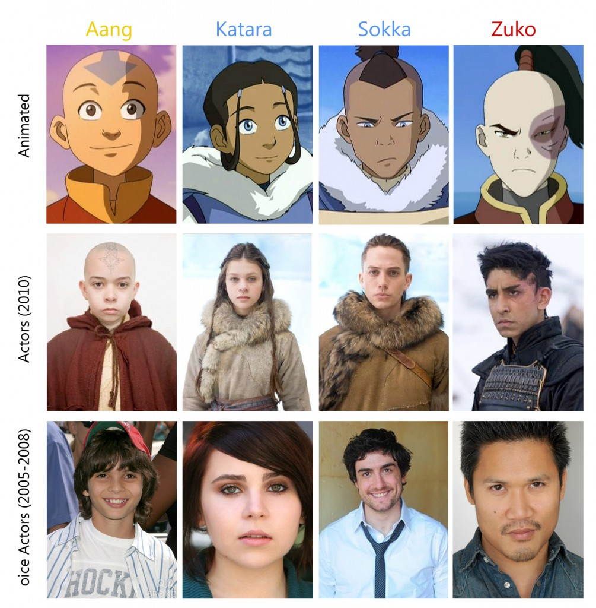

Between 2005 and 2008, American-based television network Nickelodeon aired what would become one of the most lauded and commercially successful children’s shows of its time, Avatar: The Last Airbender. At its best, Avatar presents stirring storylines that grapple with the complexities of human relationships in meaningful ways, offering the audience narratives that confront racism (“Book 1-3”), misogyny (“The Warriors of Kyoshi,” “The Waterbending Master,” “The Painted Lady”), classism (“The Swamp”), and ableism (“The Blind Bandit”), while foregrounding redemption (“The Western Air Temple”), forgiveness (“The Southern Raiders”), and the importance of social support systems (“Sozin’s Comet: Part1-4”). Grounding its moral message primarily in the tenets of Buddhism and Hinduism, Avatar encourages children to become peaceful adults who work together to avoid perpetuating erasure or violence against other cultures.
Yet the American television show’s homage to and reliance on eastern and indigenous culture—in everything from its visual aesthetics to the cultural makeup of its invented nations—threatens to push the series into the realm of cultural appropriation. The fraught relationship between North American and Asian culture embedded in the makeup of the show is further complicated when considering the ramifications of M. Night Shyamalan’s film adaptation, The Last Airbender, in which the three protagonists are effectively whitewashed. This probe considers a number of nuances between cultural appropriation and appreciation in an attempt to underscore the fluidity between these categories and interrogate whether culture can be owned—and, if so, by whom.
Each episode of Season One attracted more than a million viewers on its first airing. Season One won "Best TV Series" and "Best Animated Television Series" in the boys 9- to 14-year-old demographic at the 2005 Pulcinella Awards, which gives awards for excellence in animation.
Avatar: The Last Airbender is set in a fictional Asian-inspired world divided into four nations based on the elements of the dominant natural-philosophical theory in Chinese Buddhist literature: the Water Tribes, Earth Kingdom, Fire Nation, and Air Nomads. Populating this world are people who can manipulate the elements of the nation they are born into through a process called “bending,” which is visually stylized after the martial arts T’ai Chi, Hung Gar, Northern Shaolin, and Ba Gua in each respective nation. The story follows a twelve year old boy named Aang—the last surviving airbender after the Fire Nation committed mass genocide against the Air Nomads—who also happens to be the Avatar, a being of heightened spiritual ability whose role is to master all four elements and bring balance to the world. Accompanying him on his adventure are siblings Katara and Sokka, whose dress, hunting practices, and villages in the South Pole borrow heavily from Polynesian and Native American cultures.
Avatar’s visual style is heavily indebted to Japanese anime and the work of artists and studios such as Miyazaki, Gainax, and Shinichiro Watanabe, setting it apart from other cartoons airing on Nickelodeon.
When Paramount announced a live action film trilogy adaptation of the much beloved series, fans’ excitement was short lived after it became clear that the movie would whitewash the series. The Last Airbender’s four starring roles were initially all to go to white actors, but, when pop singer Jesse McCartney backed out of the role of villain Zuko due to scheduling conflicts and was replaced by Dev Patel, a whole new issue of representation came to light. In casting a South Asian actor as the villain, The Last Airbender problematically connects darker skin to the corruption of the Fire Nation. Although Avatar is by no means a perfect representation of Asian cultures, The Last Airbender strips the series of its detailed research and replaces complex race relations between the four nations with a world in which the villains are marginalized bodies in opposition to homogenous white heroes.
In an interview with TIME Magazine, Shyamalan takes full ownership of the whitewashing of The Last Airbender, saying, “I could have cast anybody I wanted to. You’re talking to one of the only Asian filmmakers in the world who has complete control.” Shyamalan’s case is that, given his status as Indian-American, casting exclusively white actors to play the heroes of his film cannot possibly be racist because he himself is of South-Asian descent. This defence raises important questions of appropriation: namely, can one appropriate when one comes from an often-appropriated community themselves?
Evolving out of a letter writing campaign on LiveJournal called “Aang Ain’t White,” which protested the movie’s casting decisions came Racebending.com. Informed by the theories articulated in Judith Butler’s Gender Trouble, racebending also makes a clever pun on the abilities of inhabitants of the Avatar world to bend the elements. Whereas Butler’s theory of gender bending refers to the celebratory practice of performing gender against biological sex and cultural expectations, racebending replaces marginalized bodies with white bodies, restricting rather than broadening possibilities. As well, “‘racebending’ can be seen as more than simply changing the race of a character: it is changing the race of characters of color to white for reasons of marketability” (Lopez, qtd. in Gilliland 2.4). Not merely a symptom of neglect or cultural naivety, racebending is a deliberate, strategic erasure of people of color in order to increase capital.

But how can one claim the erasure of identity when, to a great extent, the characters in The Last Airbender have always been white? While they are visually depicted as Inuit and East-Asian and drawn in an anime style, Aang, Katara, and Sokka were created by two white men and voiced by white people. Indeed the villain-turned-antihero Zuko is the only one of the four to have been voiced by an Asian-American in the original series. The fact that boycotters of The Last Airbender were a) by and large not Asian or of Asian descent and b) seldom considered the fact that the majority of the original voice actors were also Caucasian suggests that perhaps fans are more attached to the idea of Indigenous- and Asian-ness the American creators present in Avatar than with the individual cultures themselves.
Avatar and The Last Airbender do not exist solely on a screen, but are part of a larger system of cultural production. As Frederic Jameson notes, “What has happened is that aesthetic production today has become integrated into commodity production generally” (qtd in Kulchyski 610). Between Avatar and its spiritual successor, The Legend of Korra, the franchise has built an immense commodity culture, consisting of comic books, video games, Lego, jewelry, clothing, and cosplay, raising questions about appropriation grounded in fans’ reactionary behaviors. For instance, is wearing orange robes appropriative if it is accompanied by blue arrow tattoos as a direct homage to an American cartoon at a comic book convention? Is it appropriative to write fanfic grounded in Asian history and mythology in order to engage in world-building in the Avatar universe?
To conclude this probe, I want to address Marcus Boon’s comment that, although today’s prevalent appropriation does not obey the laws of cultural exchange, “this doesn’t mean it’s used solely by the privileged or powerful on the marginalized and powerless, since it’s also employed by the marginalized and powerless” (231). Two weeks ago, Nigerian illustrator and comic book artist Marcus Williams released images from his Avatar fan-fiction, Avatar: The Legend of Abioye. Set one hundred years after Korra, the adaptation reimagines the characters as Nigerian, and encourages us to think about the effects of yet another type of racebending: is it appropriative for one dominated culture to depict themselves in the space of another? Or is Williams reclaiming Avatar for the marginalized after Hollywood’s instatement of white hegemony? By setting his story a century later, Williams refrains from appropriating and erasing the characters who are clearly stylized as Asian and Indigenous and tactfully allows his new Yoruba benders Iya, Ikenna, and Ballogun to (co)exist in the Avatar universe. As fanfiction, Avatar: The Legend of Abioye arguably presents a true attempt at appreciation without appropriation.